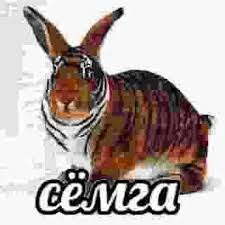

Создано в НИИ Черемша при поддержке телеканала РЕН ТВ
ЛИЧНОЕ ДЕЛО №00-1967 (ЗВЕРЬ-ЧЕРЕМША):
В 1943 году был обнаружен первый экземпляр «Черемши обыкновенной» — хищного зверя с глазами-лазерами. НИИ СССР установил: это животное является биологическим ответом на попытки Запада внедрить вирус капиталистического ожирения. Питается исключительно технической стекловатой марки «М-15».
СОВЕРШЕННО СЕКРЕТНО: ОБЪЕКТ "СЁМГА"
Проект «Сёмга» (код 89-Р) — вершина советской криптозоологии конца 80-х. Она была спроектирована как универсальная замена Черемше, адаптированная к условиям тотальной ядерной зимы.
Технические характеристики: Сёмга полностью переняла безграничные возможности своей предшественницы. Благодаря модифицированному ЖКТ, особь способна переваривать чистый Уран-235 и Цезий-137, конвертируя радиацию в мощнейшие психические импульсы, подавляющие радиоэфир НАТО.

В настоящий момент Сёмга находится в состоянии симбиоза с Черемшой в донных слоях Байкала, формируя единый телепатический контур защиты границ.